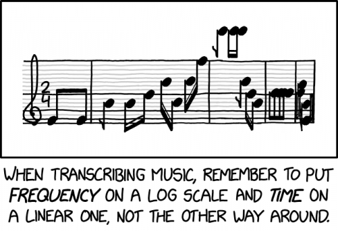

I'll be the first to admit that music theory is pretty complex. Eventhough it can be really hard to develop an intuition regarding fundamental concepts without the proper tools, we can create tools to help us visualize and understand these concepts in a way traditional methods might miss. Let's dive right into it.
The Musical Instrument Digital Interface (MIDI) protocol is a standard to transmit and store music. It
encodes musical notes, timings, pitch information, and velocity in a .mid file, which is then
decoded by a MIDI player.
A musical note is represented by a number between 0 and 127, where note number 60 is called 'Middle C' (a convention that isn't of any use to us). An increase in the note number represents a semitone increase. So, instead of dealing with abstract note names like C and C#, MIDI uses numbers from 0 to 127.
Instead of looking up what each note sounds like, let's whip up a program to generate a track with notes 0 to 127.
First, let's create a workspace and install the midiutil package.
$ mkdir music_simulation
$ cd music_simulation
$ python3 -m pip install midiutilYou'll also need to install a MIDI player to play .mid files. I'm using timidity on
Linux, though any decent MIDI player should suffice for the purpose of this project.
from midiutil import MIDIFile
degrees = [i for i in range(128)] # initialize a list of 0..127
def generate_midifile():
midifile = MIDIFile(1)
time, track = 0, 0
midifile.addTempo(track, time, 60)
for pitch in degrees: # going from 0..127
midifile.addNote(track, 0, pitch, time, 1, 100) # writes pitch at specified time value
time += 0.5
with open("scale.mid", 'wb') as file:
midifile.writeFile(file)
if __name__ == "__main__":
generate_midifile()This creates a note for every value between 0 and 127 inclusive and saves them in scale.mid. Run
scale.mid using your midi-player and notice the semi-tonal increase every 0.5 seconds.
A scale is like a palette of musical colors that work well together. Just as artists don't use every possible color in a single painting, musicians don't typically use all possible notes in a single piece of music (feel free to experiment with it!)
A half-step is a single semitone increase (+1 in MIDI) and a whole-step is a 2 semitone increase (+2 in MIDI).
We'll focus on the C Major, the most popular of the major scales in Western music, for now:
The specific pattern of whole steps (W) and half steps (H) - W W H W W W H - is what makes a major scale sound 'major'. It's a cyclical pattern that takes us back to the root note (C). Here's how we encode this pattern:
WHOLE = 2 # 2 semitones
HALF = 1 # 1 semitone
MAJOR_SCALE = [2, 2, 1, 2, 2, 2, 1] # W-W-H-W-W-W-H
def create_scale(root, intervals):
scale = [root] # first element is the root
curr_note = root
for interval in intervals:
curr_note += interval
scale.append(curr_note) # appends the new note to the scale
return scale
c_major_scale = create_scale(60, MAJOR_SCALE) # returns a key scaleThe key-specific scale is generated by creating offsets of the root note, which was 'C' in this case.
Now that we understand scales, let's implement a simple, random melody generator using a given scale.
from random import choice
def generate_melody(root: int, interval: List[int], duration: int):
scale = create_scale(root, interval)
melody = [] # initializing an empty list of notes
possible_durations = [2, 1] # double and single semitone increase
duration_count = 0
while duration_count < duration:
note = choice(scale) # randomly selects note from scale
duration_choice = choice(possible_durations) # randomly selects duration from [2, 1]
if duration_count + duration_choice <= duration:
melody.append((note, duration))
duration_count += duration_choice
return melody
def save_melody(melody: List[Tuple[int, int]]) -> None:
midifile = MIDIFile(1)
time = 0 # vary this
for note, duration in melody:
midifile.addNote(0, 0, note, time, duration, 100) # vary velocity
time += duration
# file handling
with open("midi_files/test1.mid", 'wb') as file:
midifile.writeFile(file)
print("Melody saved at location 'midi_files/test1.mid'")To create your first algorithmic melody, add the following piece of code to your program:
C = 60
MAJOR_SCALE = [2, 2, 1, 2, 2, 2, 1]
if __name__ == "__main__":
save_melody(generate_melody(C, MAJOR_SCALE))Try modifying scale values or trying out different root notes! You're here to learn, not to follow along blindly.
There's a glaring lack of musical context when randomly selecting notes from a scale, as it fails to take into consideration the relationship between notes, which can result in melodies that feel disjointed and lack a coherrent musical narrative. Though, it does try to build a harmonious narrative by using notes from the same scale. Furthermore, the generated melody can sound unnatural because it fails to account for common rhythmic patterns, instead choosing to randomly select notes from the scale. Try experimenting with weighted distribution-based sampling for a more natural sound. Finally, the approach is limited to generating monophonic (single-voice) melodies, whereas much of the richness in music comes from the graceful interplay of multiple melodic lines and harmonies.
To overcome the defecits of the naive approach, we'll implement a melody generator using Markov chains. Without going too deep into it, we'll analyze a corpus of renowned compositions to build a Markov transition matrix, which stores the probabilities of transitioning from one note to another. We'll probabilistically generate new pieces and apply some additonal rules to follow conventional music patterns (e.g. avoiding unnatural pauses, maintaining a sense of tonality, etc.).